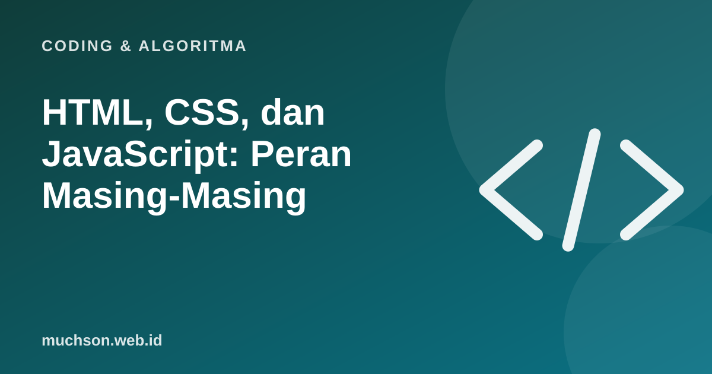

Beranda › Artikel › Coding & Algoritma
Coding & AlgoritmaHTML, CSS, dan JavaScript: Peran Masing-Masing
Tiga bahasa ini membentuk hampir semua halaman web yang Anda buka. Cara termudah mengingat perannya: HTML adalah kerangka rumah, CSS adalah cat dan dekorasinya, JavaScript adalah listrik dan perabot yang bergerak.

Tiga lapisan, tiga peran
Contoh sederhana
<!-- HTML: struktur -->
<button id="salam">Klik saya</button>
<p id="pesan"></p>
/* CSS: tampilan */
button { background: #1e5ab2; color: white; padding: 10px 16px; border-radius: 8px; }
// JavaScript: perilaku
document.getElementById("salam").onclick = () => {
document.getElementById("pesan").textContent = "Halo, dunia!";
};Urutan belajar yang disarankan
- HTML: judul, paragraf, daftar, tautan, gambar, formulir.
- CSS: warna, jarak, tipografi, flexbox dan grid, desain responsif.
- JavaScript dasar: variabel, fungsi, kondisi, DOM, event.
- Git dan deploy: membagikan hasil.
- Framework (misalnya React) setelah dasar kuat.
Tips
HTML semantik (memakai elemen seperti header, nav, article) membuat halaman lebih mudah dipahami oleh mesin pencari dan pembaca layar. Itu bagian dari SEO dan aksesibilitas.
Tanya jawab
Apakah HTML termasuk bahasa pemrograman?
Bukan. HTML adalah bahasa markup untuk menandai struktur isi. JavaScript adalah bahasa pemrograman.
Apakah perlu framework?
Tidak di awal. Kuasai dasar lebih dulu agar memahami apa yang dilakukan framework.
Bagaimana membuat web responsif?
Gunakan tata letak fleksibel (flexbox, grid), satuan relatif, dan media query untuk menyesuaikan layar.